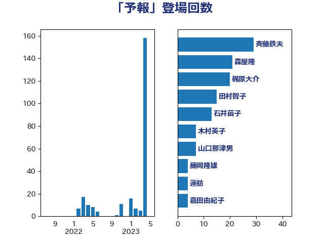

単語「予報」

| 斉藤鉄夫 | 公明党 | 29 回 |
| 森屋隆 | 立憲民主党 | 21 回 |
| 梶原大介 | 自由民主党 | 20 回 |
| 田村智子 | 日本共産党 | 15 回 |
| 石井苗子 | 日本維新の会 | 13 回 |
| 木村英子 | れいわ新選組 | 7 回 |
| 山口那津男 | 公明党 | 7 回 |
| 藤岡隆雄 | 立憲民主党 | 4 回 |
| 蓮舫 | 立憲民主党 | 4 回 |
| 嘉田由紀子 | 無所属 | 4 回 |
| 笠井亮 | 日本共産党 | 3 回 |
| 高木真理 | 立憲民主党 | 2 回 |
| 豊田俊郎 | 自由民主党 | 2 回 |
| 田中健 | 国民民主党 | 2 回 |
| 日下正喜 | 公明党 | 2 回 |
| 岸田文雄 | 自由民主党 | 2 回 |
| おおつき紅葉 | 立憲民主党 | 2 回 |
| 鈴木敦 | 国民民主党 | 1 回 |
| 野中厚 | 自由民主党 | 1 回 |
| 西岡秀子 | 国民民主党 | 1 回 |
| 若松謙維 | 公明党 | 1 回 |
| 緒方林太郎 | 無所属 | 1 回 |
| 篠原孝 | 立憲民主党 | 1 回 |
| 石井正弘 | 自由民主党 | 1 回 |
| 渡辺創 | 立憲民主党 | 1 回 |
| 武部新 | 自由民主党 | 1 回 |
| 枝野幸男 | 立憲民主党 | 1 回 |
| 岡本あき子 | 立憲民主党 | 1 回 |
| 山添拓 | 日本共産党 | 1 回 |
| 小沢雅仁 | 立憲民主党 | 1 回 |
| 大野泰正 | 自由民主党 | 1 回 |
| 大口善徳 | 公明党 | 1 回 |
| 大串博志 | 立憲民主党 | 1 回 |
| 塩田博昭 | 公明党 | 1 回 |
| 堀内詔子 | 自由民主党 | 1 回 |
| 堀井巌 | 自由民主党 | 1 回 |
| 吉田宣弘 | 公明党 | 1 回 |
| 中川康洋 | 公明党 | 1 回 |
| 中川宏昌 | 公明党 | 1 回 |